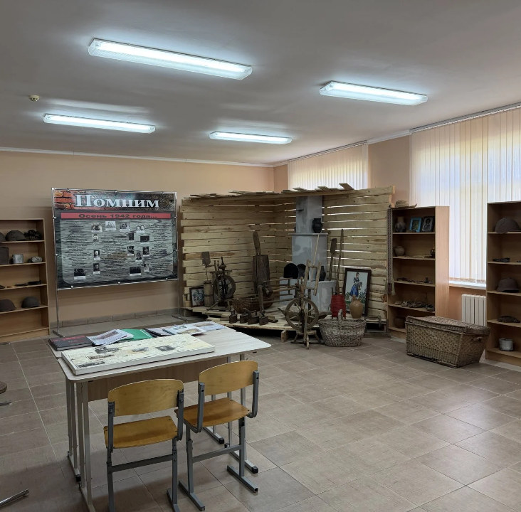

ГУО «Средняя школа п. Мухавец»
Школьный помощник
→ или пробел — начать · F — полный экран
Школьный помощник
Telegram-бот с ИИ для учёбы, личных дел и школьной информации
Школьный помощник
Содержание
9 разделов: от проблемы до облачной версии
01 · Проблема
Где найти нужную информацию?
Расписание, домашние задания и справочные материалы лежат в разных местах. Ученик тратит время на поиск.
Задача проектаОбъединить доступ к школьной информации в одном месте
02 · Цель и гипотеза
Цель
Оценить возможности и ограничения Telegram-бота
Гипотеза
Telegram-бот может объединить информацию и инструменты для учёбы
Условия: актуальные данные, работа в облаке и проверка ответов ИИ
03 · Этапы исследования
Как шла работа
04 · Помощник в действии
Ученик спрашивает, бот объясняет
- Учёба с ИИОбъяснит тему, разберёт задачу по шагам
/explain /steps /practice - Расписание и ДЗУроки на сегодня и неделю, звонки
/today /week /bell /hw - Дела и фокус-таймерСписок задач и утренние напоминания
/todo /focus /subscribe - Викторины и прогрессИгровые очки и уровни, а не оценки
/quiz /progress
/explain Теорема Пифагора
ОбъяснениеВ прямоугольном треугольнике квадрат гипотенузы равен сумме квадратов катетов.
Формулаc² = a² + b²
Пример3² + 4² = 9 + 16 = 25 = 5², значит c = 5
Проверь себяКатеты 5 и 12. Чему равна гипотенуза?
Диалог повторяет структуру ответа бота: объяснение, формула, пример, вопрос. Расписание в боте демонстрационное.
05 · История рядом
Школьный музей и памятники Мухавца
Онлайн-экспозиция школьного музея и маршрут памяти по посёлку прямо в боте.
/museumэкспозиция, стенд «Помним», 3D-прогулка/monumentsпамятники и весь маршрут памяти
06 · Как это работает
Бот работает в облаке
Компьютер автора можно выключить, а бот продолжит отвечать
07 · Техническая проверка
Что уже работает
- Данные сохраняютсяПрогресс, дела и подписки на напоминания
- Доступ разграниченЛичные данные видит только владелец, ДЗ меняет учитель
- ИИ отвечает на вопросыОбъяснение, формула, пример и вопрос для самопроверки
Проверены сценарии работы. Образовательный эффект требует апробации.
08 · Ограничения и защита
Честно об ограничениях
Нужны интернет и доступные облачные сервисы
/privacyчто хранит бот/resetочистить диалог с ИИ/delete_meудалить профиль09 · Развитие реализации
От прототипа к облаку
Раннее описание
- Python и aiogram
- JSON-файлы
- Фоновый цикл напоминаний
Облачная версия
- JavaScript и Telegram Bot API
- Облачная база данных
- Планировщик и помощь ИИ
На защите демонстрируется текущая облачная версия
Вывод
Работающий помощник для учёбы
Следующий этап — апробация с учащимися
Спасибо за внимание!
Материалы для вопросов · 1/5
Как устроен этот тип бота
- Назначение
- Информация, учёба и личная организация
- Принцип работы
- Гибрид правил и языковой модели
- Общение
- Сообщения, команды и кнопки
- Рабочий язык
- Русский интерфейс
Команды используют правила. ИИ формирует объяснения.
Материалы для вопросов · 2/5
Все команды бота
/ask /explain /steps /practice /formula /reset/start /change /today /tomorrow /schedule /week /bell /subject/hwучителю: /addhw /delhw/subscribe /unsubscribe /settime /mysubs/todo /addtask /done /deltask /focus /stopfocus/quiz /progress/joke /fact /word/museum /monuments/menu /tour /top /info /privacy /delete_me /id /helpучителю: /statsМатериалы для вопросов · 3/5
Что проверяют тесты
- Данные и доступ
- Сохранение и доступ только владельцу
- ИИ
- Квоты, короткий контекст и обработка сбоя
- События Telegram
- Защита от повторных запросов
- Уведомления
- Повтор при временной ошибке
- Команды
- Обработка опубликованного меню
Нагрузочные и педагогические испытания — следующий этап
Материалы для вопросов · 4/5
План апробации с учащимися
Одинаковые задачи
Расписание, ДЗ и справочная информация
Сравнение способов
Привычный поиск и использование бота
Это план исследования. Результаты апробации пока отсутствуют.
Материалы для вопросов · 5/5
Источники проекта
- Исследовательская работа
- Текст автора и раннее описание прототипа
- Исходники и проверки
src/,migrations/,test/bot.test.js- Telegram
- Официальная документация Bot API
- Cloudflare
- Workers, база D1, Cron и Workers AI
- Школьный музей
- Сайт «Мухавец — маршрут памяти»